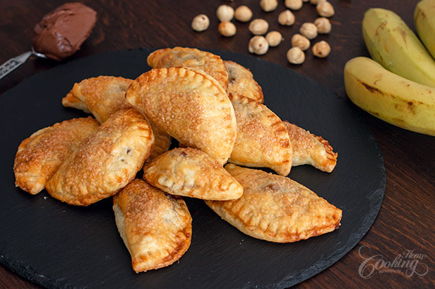

Nutella Banana Hand Pies

I looove Hand Pies. Hand Pies are amazing pastries made with pie crust with either sweet or savory filling, perfect for any time of the day. They are very easy to put together, you can prepare the dough in advance and have it ready for whenever you are craving for some delicious snacks for entire day.
For this recipe I’ve chosen a Nutella and Banana filling with a bit of crunch coming from the toasted hazelnuts. With an irresistible flavored filling, crunchy hazelnuts and a flaky buttery pie crust these hand pies are really out of this world.
You can choose each time a different filling, there are so many options you can never get bored of these. Apples, berries, chocolate, peanut butter, cheese, various savory fillings… hard not to fall in love with them. Hope you’ll give them a try.
Prep time=30 mins || Cook time=30 mins || Total time=1 hr
Ingredients
Makes 15 hand pies
Pie Dough
1 1/4 cup (160g) all-purpose flour
1/2 cup (113g) unsalted butter, chilled and cut into small pieces
1/4 tsp (1g) salt
1 tsp (5g) sugar
4 tbsp (60ml) ice cold water
Filling
1/4 cup (25g) toasted hazelnuts, chopped
1 small banana, thinly sliced
1/2 cup (150g) Nutella
Garnish
Beaten egg
Brown sugar
Directions
Prepare the pie dough. In a medium bowl whisk flour with salt and sugar. Incorporate butter using a pastry blender, a fork or a pastry processor, until crumbs are formed. Add water and stir until incorporated. Wrap in plastic wrap, shape into a disk and refrigerate for at least 1 hour. Preheat oven to 350F (180C). Line a baking sheet with parchment paper and set aside until ready to use. On a floured surface roll dough to 1/8 inch (3mm) thick. Cut out out 3 1/2 inch (9 cm) circles. Re-roll remaining dough and cut into circles until you run out of dough. Place about 1 tsp nutella on one half of the circle and top with chopped hazelnuts and a slice of banana. Brush the edges of the circle with beaten egg and fold the dough over the filling to create a semi-circle. Use a fork to press the edges together to seal. Place the pies on the prepared baking tray. Brush the top of each pie with beaten egg and sprinkle the top with brown sugar. Bake for 25-30 minutes, or until golden brown. Let cool slightly before serving.
Nutrition facts
1 Serving out of 15 - Calories:163, Fat:10g, Saturated Fat:6.8g, Carbohydrates:16.5g, Sugar:6.7g, Fiber:1.1g, Protein:2g, Cholesterol:16mg, Sodium 75mg 3%, Vitamin D 4mcg 21%, Calcium 16mg 1%, Iron 1mg 6%, Potassium 87mg 2%, daily percent values are based on a 2000 cal diet